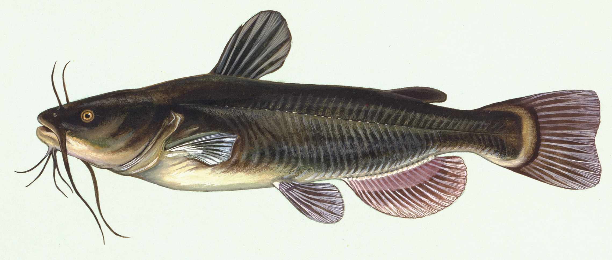

1. 课本书
竞争让市场更高效 - Competition makes the market more efficient
西班牙人特别喜欢吃沙丁鱼。但沙丁鱼对离开大海后的环境极不适应，运输就成了问题。鱼上岸后，过不了多久就会死去。而死掉的沙丁鱼口感很差，作为商品销售，价格就会便宜很多。如果上岸时沙丁鱼还活着，鱼的卖价可以涨很多倍。为了延长沙丁鱼的存活期，减少经济损失，渔民们想了很多办法，但情况仍然没有得到太大的改善。
后来一位渔民无意中发现了一种巧妙而实用的方法：把几条沙丁鱼的天敌鲇鱼放进装鱼的设备中。因为鲇鱼是食肉鱼，无法和沙丁鱼和平共处，它会四处游动寻找小鱼吃，对沙丁鱼构成威胁。为了逃避天敌，沙丁鱼自然会不断地加速 游动，从而保持了旺盛的生命力，存活的比例大大提高。看到这里，你有什么感想和体会呢？其实，这在经济学上被称为“鲇鱼效应”。
鲇鱼效应对于市场经济以及现代企业管理都有着重要的启发作用。这个概念的核心是：一个市场如果能采取一种措施，刺激企业活跃起来，就能使企业获得足够的活力，在市场中积极参与竞争而不至于落后，同时这样反过来又能促使市场更为高效。
从本质上说，“鲇鱼效应”使得企业和员工产生一种危机感，其实就是一种压力效应。
很多研究发现，适度的压力有利于我们保持良好的状态，更加有助于挖掘我们的潜力，从而提高个人的工作效率。比如运动员每到参加比赛，尤其是决赛时，一定要将自己调整到接近最佳状态，让自己感到适度的压力，如果他不紧张、没压力感，则不利于出成绩。因此，“鲇鱼效应”的确对挖掘员工潜力、提高企业活力具有积极的意义

1.1. 生词
| No. | Word | Meaning |
|---|---|---|
| 1 | 沙丁鱼 | shādīngyú - n. sardine |
| 2 | 运输 | yùnshū - v. to transport, to convey |
| 3 | 岸 | àn - n. bank (of a river, lake, etc.), shore, coast |
| 4 | 商品 | shāngpǐn - n. goods, commodity |
| 5 | 延长 | yán cháng - v. to prolong, to lengthen |
| 6 | 存活 | cún huó - v. to survive, to exist |
| 7 | 改善 | gǎi shàn - v. to improve, to make sth. better |
| 8 | 无意 | wúyì - adv. accidentally, inadvertently |
| 9 | 巧妙 | qiǎo miào - adj. ingenious, clever |
| 10 | 实用 | shí yòng - adj. practical |
| 11 | 天敌 | tiān dí - n. natural enemy |
| 12 | 鲇鱼 | niányú - n. catfish |
| 13 | 设备 | shè bèi - n. equipment, device |
| 14 | 和平 | hépíng - adj. peaceful |
| 15 | 构成 | gòu chéng - v. to compose, to form, to pose |
| 16 | 逃避 | táo bì - v. to escape, to evade |
| 17 | 不断 | bú duàn - adv. continuously, unceasingly |
| 18 | 旺盛 | wàng shèng - adj. exuberant, vibrant |
| 19 | 比例 | bǐ lì - n. proportion, scale |
| 20 | 感想 | gǎnxiǎng - n. impressions, thoughts |
| 21 | 概念 | gàiniàn - n. concept, notion |
| 22 | 核心 | hé xīn - n. core, kernel |
| 23 | 刺激 | cì jī - v. to stimulate, to excite |
| 24 | 活力 | huólì - n. vigor, vitality |
| 25 | 落后 | luò hòu - v. to fall behind, to lag behind |
| 26 | 本质 | běn zhì - n. essence, nature, intrinsic quality |
| 27 | 员工 | yuángōng - n. staff, employee |
| 28 | 危机 | wēijī - n. crisis |
| 29 | 有利 | yǒu lì - adj. beneficial, advantageous |
| 30 | 挖掘 | wājué - v. to dig, to unearth |
| 31 | 潜力 | qián lì - n. potential |
| 32 | 决赛 | jué sài - v. final, final match |
| 33 | 接近 | jiē jìn - v. to approach, to be close to |
| 34 | 佳 | jiā - adj. good, fine |
| 35 | 的确 | díquè - adv. indeed, really |
1.2. 注释
无意：
“无意” ,động từ, có nghĩa là không muốn, không có ý định. Ví dụ：
- 他无意伤害任何人。
- 我无意打扰您，不过我可以跟您谈一会儿吗？
“无意”, có thể làm phó từ, có nghĩa là không cố ý, thường nói, “无意中·····”. Ví dụ:
后来一位渔民无意中发现了一种巧妙而实用的方法······
他在收拾花园时，无意地找到了这只耳环。
有利：
Tính từ, có nghĩa là có lợi, có ích. Thường dùng “有利于” để biểu thị có lợi cho người hoặc vật nào đó. Phủ định là “不利”.
高高的个子，漂亮的外表，都是他的有利条件。
很多研究发现，适度的压力有利于我们保持良好的状态，······
笑能促进心肺活动，改善肌肉紧张状况，对睡眠也是有利的。
的确：
Phó từ, ý nghĩa là hoàn toàn chính xác, chân thực. Có thể trùng điệp “的的确确”。Ví dụ:
因此，“鮎鱼效应”的确对挖掘员工潜力，提高企业活力具有积极的意义。
他的确我所教过的学生中最聪明的。
咱们总裁选择李阳负责的的确确有些冒险，因为他太年轻了。
Phân biệt 接近 và 靠近：
共同点：Đều là động từ, đều có nghĩa là khoảng cách giữa hai đối tượng rất gần hoặc chuyển động về mục tiêu nhất định, làm khoảng cách giữa cả hai trở nên nhỏ, có lúc có thể dùng thay thế cho nhau. Ví dụ:
- 这个地方接近/靠近北极地区，夏季白天很长，天亮得也很早。
不同点：
接近 靠近 1 Từ được kết hợp có thể biểu thị người, sự vật, thời gian, địa điểm và số lượng cụ thể. Ví dụ
- 接近下午一点时，救护车终于赶到了。
Từ kết hợp có thể biểu thị người, sự vật, địa điểm cụ thể nhưng thông thường không thể dùng với thời gian, số lượng. Ví dụ:
- 他们挤在靠近车窗的地方，脸对脸离得很近。
2 Còn có thể kết hợp với từ ngữ biểu thị sự vật trừu tượng. Ví dụ:
- 经过努力，现在我们已越来越接近年初定下的销售目标了。
Thông thường không thể kết hợp với những từ ngữ biểu thị sự vật trừu tượng. 3 Còn biểu thị khoảng cách/ sự chênh lệch không lớn lắm. Ví dụ:
- 他们俩的水平非常接近，这场比赛真不好说谁会赢。
Không có ý nghĩa này.
1.3. 运用
竞争利与弊
对我来说，竞争是一种有利有弊的状态。 有利的是，竞争赋予个体压力和动力，提高学习和工作效率、客观地评价个人、提高水平，还能让集体更富有生气，丰富生活、增添学习和生活的乐趣。 有弊的是，竞争使某些成功者滋长骄傲情绪，使某些失败者产生自卑感，引起心情的过分紧张和焦虑、产生忌妒心理。竞争使人更匆忙地做出决定，那些仓促决策的结果有时是可观的，但如果不是这样的，则可能会造成糟糕的后果。 我认为竞争是社会个体之间自然形成的行为，是不可避免的。然而，如果我们保持竞争的健康，我相信竞争始终是利多弊少的。
1.4. 口语
1. 请列举一些生活中的实例，说明竞争给我们带来的好处？
2. 你有过在竞争中失败的经历吗？说说他对你有何影响？
3. 如果竞争是不可避免的，你认为应该如何面对？
2. 作业本
2.1. 听力
女：这么多家卖沙丁鱼的店，怎么只有那家特别贵？
男：只有他们知道怎么延长沙丁鱼的存活期。
问：从对话中可以知道什么？（A让沙丁鱼存活很困难）
男：你昨天的飞机几点到的？
女：别提了，快12点才到，晚点了4个小时。
问：飞机本来应该几点到？（B快八点）
女：听说对方有个队员非常强，你有把握吗？
男：我不觉得他可以对我构成威胁。
问：男的是什么意思？（D对手不如他）
男：你们今年不招聘男老师吗？
女：我们是理工科学校，男老师占的比例太大了。
问：女的是什么意思？（C他们希望那女比例平衡）
女：你觉得小张能办好这件事吗？
男：我听他说了他的想法，我觉得的确很巧妙。
问：男的是什么态度？（A信任）
男：那里是山区，条件那么差，你怎么会想到要去支教呢？
女：正因为那里是落后地区，才需要大家去建设。
问：关于山区，下列哪项正确？（C非常落后）
女：我已经两个月没有跟他见面了，也不接他的电话。
男：你总这么逃避也不是办法。
女：可是我不知道该怎么跟他说……
男：不知道怎么说也得说啊，时间越久越麻烦。
问：男的是什么意思？（C要面对这个问题）
男：来中国一年多了，你有什么感想？
女：我最大的体会就是中国太大了，要学的、要看的、要吃的太多了，只待两年远远不够。
男：那你打算延长留学时间吗？
女：我正在考虑这个问题。
问：关于女的，下列哪项正确？（B她正在中国学习）
女：这批来应聘的人，你对谁比较满意？
男：我觉得那位刘先生不错，很会做商业谈判。
女：但他原来是做进出口贸易的，跟我们离得有点儿远，年龄也大了些。
男：专业知识不是问题，可以学嘛。
问：刘先生的优势是什么？（C善于商业谈判）
男：最近股票市场很火，你不打算试试吗？
女：股市风险太大了。 男：现在形势好，我们楼里的大爷大妈都赚钱了。
女：正因为连大爷大妈都开始炒股了，我才害怕呢。
问：女的对炒股是什么态度？（B反对）
女：爸爸，今天生物课上，老师教了我们达尔文的“自然选择学说”。 男：是吗？那你说说是什么意思。 女：简单地说，“自然选择”就是生物之间存在着竞争，适应者才能够生存下来，不适应的则会被淘汰。 男：说得真清楚！ 女：我们人类也是通过这样的竞争，躲开了很多天敌的威胁，才生存到今天的。 男：是的。不过，自然选择的范围也没有当年达尔文所说的那么广泛。以后这些你也会慢慢学到的。
“自然选择学说”是谁提出来的？（C达尔文）
根据这段对话，下列哪项正确？（D动物之间存在着竞争）
一只兔子被猎人打伤了，但它竟然带着枪伤成功地逃过了猎狗的追捕，回到了家里。同伴们都围过来惊讶地问它：“那只猎狗很凶呀，你又带着伤，是怎么甩掉它的呢？”兔子说：“它是跑得快，但我用尽了全力呀！它没追上我，最多挨一顿骂，而我如果不用尽全力地跑，就没命了！”每个人都有很大的潜能。正如心理学家所指出的，一般人的潜能只开发了百分之2到百分之8左右。这就是说，我们还有百分之90多的潜能处于沉睡状态。谁要想成功，必须用尽全力才行。
谁被打伤了？（C兔子）
兔子为什么可以逃跑？（D他用尽全力地跑）
2.2. 阅读
15-18.
1888年，美国银行家莫尔Moore当选副总统。可是，在当银行家、当总统以前，他曾经只是个卖布的小商人。莫尔说：“我做布匹生意真的很成功。可有一天，我读了一本文学家爱默尔Emerson的书，书中的一段话深深地15刺激了我。它的16核心意思是：一个人如果拥有一种人家需要的才能和特长，那么，不管他处在什么环境、什么角落，17终有一天会被人发现。这段话让我怦然心动，我觉得自己应该走向更广阔的空间去发展。这使我想到了当时最重要的金融业，于是，我不顾别人的反对，放弃布匹生意，改营银行。我18不断地努力，在稳妥可靠的条件下进行运作，许多人和企业都愿意找我，因此我经营银行十分成功，最终成为金融巨头。”
19.
很多研究发现，适度的压力有利于我们保持良好的状态，更加有助于挖掘我们的潜力，从而提高个人的工作效率。比如运动员每到参加比赛，尤其是决赛时，一定要将自己凋整到接近最佳状态，感到适度的压力，让自己兴奋，如果他不紧张、没压力感，则不利于出成绩。适度的压力对挖掘自身的潜力，是有正面意义的。（B给人的压力应适度）
20.
美国有个43岁的妇女，为她姨妈向政府申请到了一个免责的轮椅。她所做的不过是准备了一些必要的文件，并填写了一些表格。为此，她写了一篇如何向政府申请免费轮椅的报告。然后，她在网上卖她的报告，售价仅仅2美元，后来她每月可赚3万!简直难以置信，这么简单的事会有市场，会有如此的潜在利益! （B申请免费轮椅的手续非常简单）
21.
一家森林公园曾养了几百只梅花鹿。尽管环境幽静，水草丰美，又没有天敌，但几年以后，鹿群非但没有发展，反而病的病，死的死，竟然出现了负增长。后来公园买回几只狼放置在园内。在狼的追赶捕食下，鹿群只得紧张地奔跑逃命。这祥一来，除了那些老弱病残者被狼捕食外，其他鹿的体质日益增强，数量也迅速地增长起来。（D狼的追赶使梅花鹿体质增强）
22.
市场竞争是指商品生产者或者商品经营者为争夺有利的生产或流通条件、地位而进行的斗争。竟争是商品经济的一般规律，它是商品本身内在矛盾的产物，只要存在商品生产和商品交换，竟争规律就起作用。商品经济还有一个重要的价值规律。价值规律存在，必然产生竟争;同时，价值规律的作用，也只有在竟争中才能实现。（C只要有商品生产和交换，就有竞争）
23-25.
有一句老话，叫“一个和尚挑水吃，两个和尚抬水吃，三个和尚没水吃”。如今，这个观点过时了。现在的观点是“一个和尚没水吃，三个和尚水多得吃不完”。
有三个庙，这三个庙离河边都比较远。怎么角旱决吃水问题呢?第一个庙，由于挑水的路比较长，如果一个人挑一会儿就累了。于是三个和尚商量，咱们来个接力
赛吧，每人挑一段路。第一个和尚从河边挑到半路停下来休息，第二个和尚继续挑，之后再转给第三个和尚，挑到缸里灌进去，空桶回来再接着挑，大家都不累，水很快就挑满了。这是协作的办法，也叫“机制创新”。
第二个庙，老和尚把三个徒弟都叫来，说我们立下了新的庙规，要引进竟争机制。三个和尚都去挑水，谁水挑得多，晚上吃饭加一道莱;谁水挑得少，吃白饭，没菜。三个和尚拼命去挑，一会儿水就挑满了。这个办法叫“管理创新”。
第三个庙，三个小和尚商量，天天挑水太累，咱们想想办法。山上有竹子，把竹子砍下来连在一起，竹子中心是空的，然后买一个辊鲈。第一个和尚把一桶水摇上去，第二个和尚专管倒水，第三个和尚在地上休息。三个人轮流换班，一会儿水就灌满了。这叫“技术创新”。
23。第一个庙用的办法是：C三个人接力挑水
24。第二个庙的“管理者”是：A老和尚
25。第三个庙跟前两个的区别是：D使用了新的工具
26-28.
世界著名的立顿公司为了使自己的产品迅速打进市场，在开业伊始别出心裁地举办了一次精彩的表演。他们买来几头小猪，用绸带给它们精心打扮，并挂上写有“立屯页家的孤儿”的横幅，然后赶着它们穿过闹市，引起众人的注意，达到了让商品家喻户晓的目的。
做广告通常需要花重金，但若匠心独运，也能四两拨千斤，用最少的钱让广告有声有色。茶叶公司与猪，风马牛不相及，但经公司公关人员策划，小猪成了促销功臣，企业也借此（thereby）腾飞（fly swiftly upward）。
相比之下，我们有些企业至今仍固守着传统的营销模式，促销方式习愤跟着感觉走，以致推出的促销方式不是步人后尘，就是偏离了市场，结果总是感到竟争激烈，生意难做。
在当今的市场竟争中，除了商品质量和销售价格的竟争之外，营销策略也是一种竞争手段。如何以较少的投人获得轰动效果，已成为许多商家参与竟争、吸引顾客的又一热点。聪明的经营者不妨从立顿公司促销的成功经验中寻找一些启示，针对不同层次的消费需求，搞一些别出心裁的促销妙招，从而达到迅速销售的目的。
26。立顿公司为什么要买小猪?： C为了宣传他们的产品
27。根据上文，立顿公司主营的商品应该是：D茶叶
28。上文主要想告诉我们：C促销方式要有特点
2.3. 写书
写短文：决赛、感想、刺激、延长、落后
上周末的决赛给我留在内心无比激动的感想。球员们全力以赴，为观众献上了一场精彩绝伦的比赛。90分钟后，持平的比分使比赛延长到加时赛，双方依然势均力敌，比分始终焦灼。落后的队伍没有放弃，最终在最后时刻逆袭获胜，令全场观众沸腾。这场比赛不仅让人们看到了竞技体育的魅力，也刺激着我们在面对困难时永不放弃，勇往直前。